⚠️ DEPRECATED — Arquivo de Referência
Este é o conteúdo integral do tutorial v1 do NOVO CR, extraído antes da reforma de 2026-04-11.
Este HTML NÃO é exposto ao usuário final. Ele existe para leitura humana ou por IA, caso queiramos reaproveitar prosa de filosofia ou comparar abordagens ao desenhar o tutorial novo.
Snapshot: commit anterior à tag v1.3.0-pre-tutorial-rework. Plano da reforma: docs/plano_geral_novo_tutorial.md.
Origem do código: frontend/index_v2.html, objeto JS tutorialContent (linhas ~6118-6399 no snapshot).
⚡ Modo Quick — 3 Passos Essenciais (4 passos na verdade)
🎯 O que é o NOVO CR?
Relatórios de performance que vão além da nota
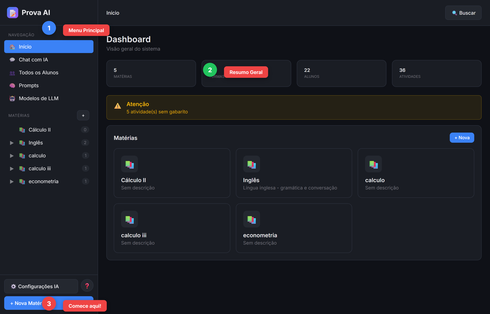
O NOVO CR não é só um corretor automático . Seu objetivo principal é:
📊 Relatórios de performance - Entender onde o aluno precisa melhorar, não só a nota🤖 Auxiliar a correção - Não substituir você! Tem aba para sua correção manual💬 Chat para o aluno - O aluno pode conversar com a IA para entender seus erros📈 Visão consolidada - Juntando várias atividades, vemos o progresso do aluno
💡 Filosofia: A IA cria documentos que auxiliam sua avaliação, gerando insights que seriam difíceis de ver manualmente.
📂 Estrutura: Matéria → Turma → Atividade
Organize suas aulas para criar relatórios poderosos
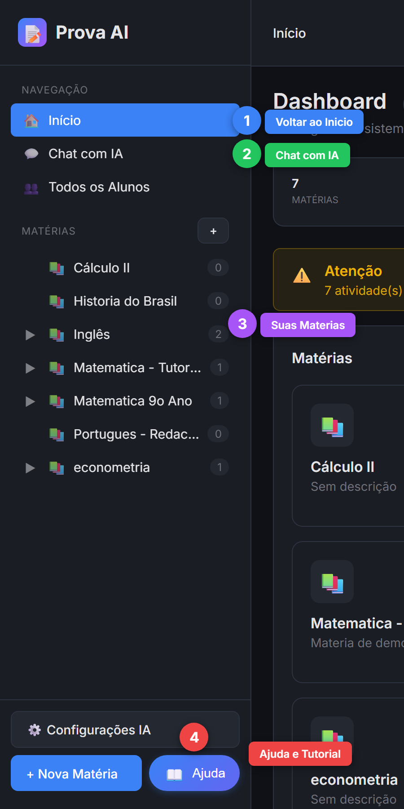
A organização é simples:
📚 Matéria - A disciplina (Matemática, Português, etc.)👥 Turma - O grupo de alunos (9º A, 1º EM, etc.)📝 Atividade - Uma prova, trabalho ou exercício específico
Para cada Atividade , você envia:
📄 Enunciado - A prova em branco com as questões✅ Gabarito - As respostas corretas👤 Prova do aluno - O que cada aluno respondeu
▶️ Para começar: Clique em "+ Nova Matéria" no menu lateral.
⚙️ O Pipeline: Como a IA Processa
Cada etapa gera um documento que você pode revisar
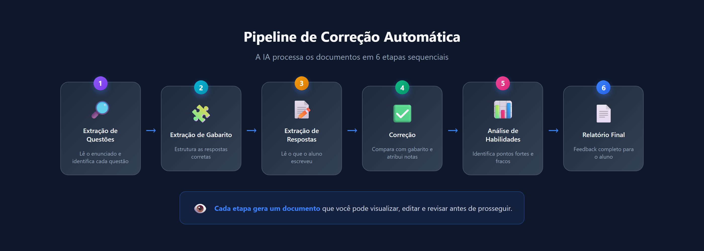
O Pipeline são etapas que a IA executa em sequência:
🔎 Extração de Questões - Lê o enunciado e identifica cada questão e seu tipo🧩 Extração de Gabarito - Estrutura as respostas corretas📝 Extração de Respostas - Lê o que o aluno escreveu✅ Correção - Compara respostas com gabarito e atribui notas📊 Análise de Habilidades - Identifica pontos fortes e fracos📄 Relatório Final - Feedback completo para o aluno
👁️ Cada etapa gera um documento que você pode visualizar e editar. A correção do professor tem sua própria aba!
💬 O Chat: Aluno Aprende com a IA
O objetivo final é ajudar o aluno a entender seus erros
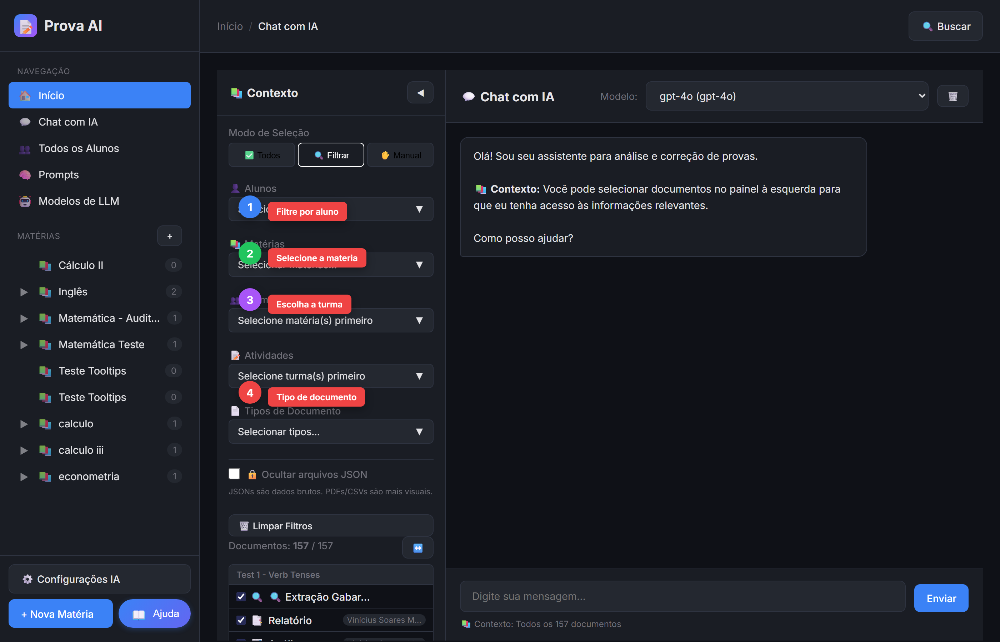
O Chat com IA é onde tudo se conecta:
Para você (professor): "Quais questões a turma mais errou?" / "Faça um relatório da turma"Para o aluno: "Por que eu errei a questão 3?" / "Me explique como resolver isso"Visão consolidada: Juntando várias atividades, o chat mostra a evolução do aluno ao longo do tempo
Use os filtros: Selecione matéria, turma ou aluno para a IA focar nos documentos certos.
🎯 O objetivo final: O aluno entende onde precisa melhorar e como melhorar, não só vê a nota.
📚 Modo Full — Completo (12 passos)
🎯 A Filosofia do NOVO CR
Muito além de um corretor automático
O NOVO CR foi criado com um objetivo claro:
📊 Relatórios que vão além da nota - Entender por que o aluno errou, não só quanto ele errou🧑🏫 Auxiliar, não substituir - A IA cria documentos de apoio. Sua correção manual tem aba própria!💬 Aprendizado ativo - O aluno pode conversar com a IA para entender seus erros📈 Visão de longo prazo - Juntando várias atividades, vemos evolução e padrões
💡 Pense assim: A IA faz o trabalho pesado de análise, você faz o julgamento pedagógico final.
📚 Passo 1: Crie uma Matéria
Organize suas disciplinas
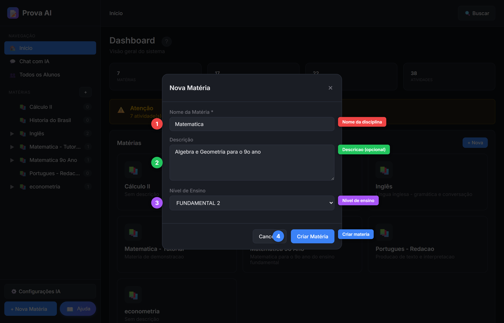
Matéria = Disciplina que agrupa todas as turmas:
Clique em "+ Nova Matéria" no rodapé do menu lateral
Nome: Digite o nome da disciplina (ex: "Matemática")Descrição: Opcional - ex: "Matemática básica"Nível: Escolha o nível de ensino
💡 NÃO coloque o ano aqui! O ano fica na Turma.
👥 Passo 2: Crie uma Turma
Agrupe seus alunos por ano letivo
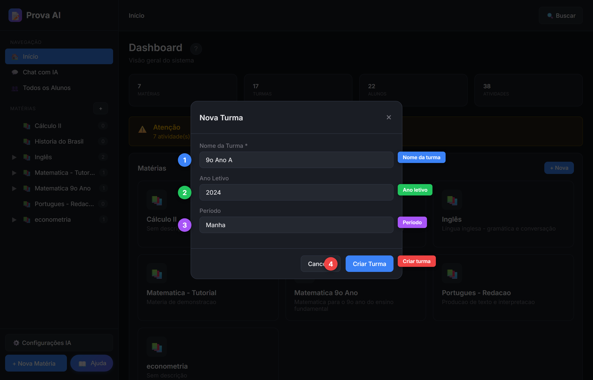
Turma = Grupo de alunos em um ano específico:
Clique na matéria para abri-la
Clique em "+ Nova Turma"
Nome: Ex: "9º Ano A" ou "Turma Manhã"Ano Letivo: 2024, 2025...Período: Opcional (Manhã, Tarde...)
📅 O ANO fica aqui! Assim você pode ter várias turmas da mesma matéria em anos diferentes.
👤 Passo 3: Adicione Alunos
Individual ou em lote via CSV
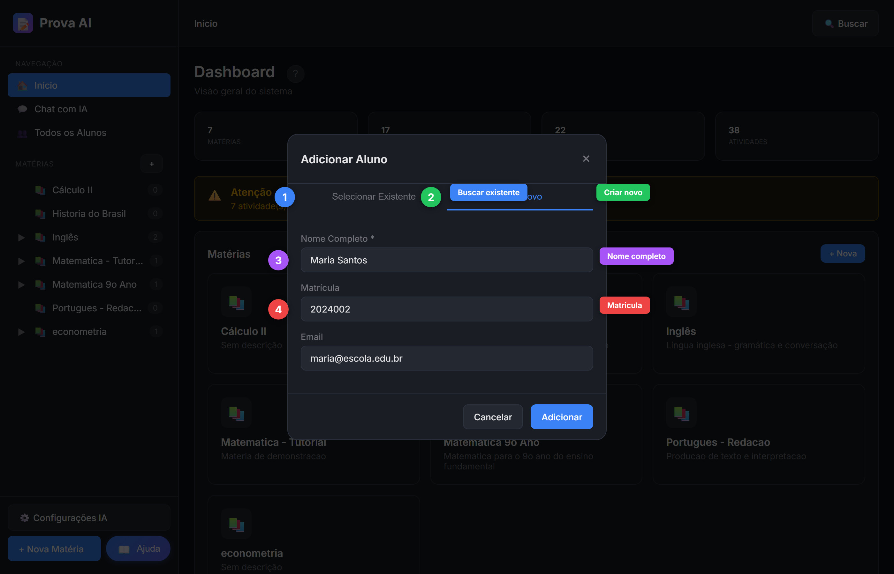
Duas formas de adicionar alunos:
🔍 Selecionar Existente: Busque alunos já cadastrados no sistema➕ Criar Novo: Cadastre nome, matrícula e email
Para muitos alunos:
Use "Importar CSV" com colunas: nome, matricula, email
Alunos podem ser compartilhados entre turmas
📝 Passo 4: Crie uma Atividade
Prova, trabalho ou exercício
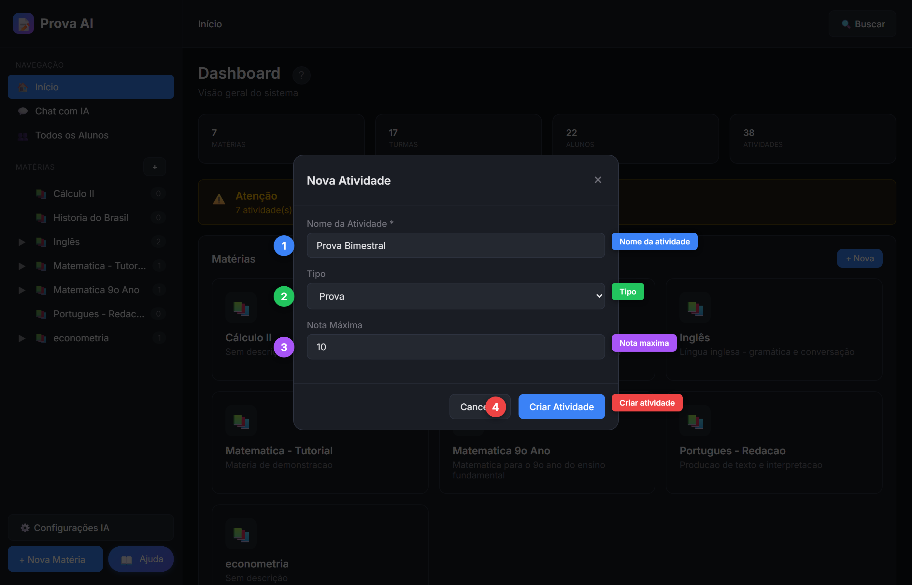
Dentro de uma turma, crie a atividade:
Clique na turma para abri-la
Clique em "+ Nova Atividade"
Nome: Ex: "Prova Bimestral"Tipo: Prova, Trabalho, Exercício...Nota Máxima: Valor total da atividade
📝 Próximo passo: Enviar os documentos da atividade!
📤 Passo 5: Envie Enunciado e Gabarito
Os documentos base da atividade
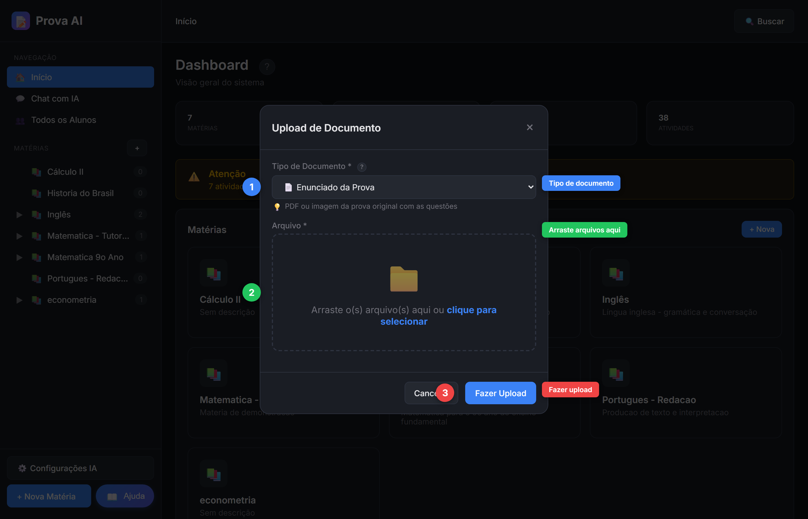
Na página da atividade, faça upload dos documentos:
📄 Enunciado: A prova em branco com as questões✅ Gabarito: As respostas corretas📋 Critérios: (Opcional) Como avaliar cada questão
Formatos aceitos: PDF, imagens (JPG, PNG), Word
🖱️ Arraste os arquivos ou clique para selecionar!
📚 Passo 6: Envie as Provas dos Alunos
Upload individual ou em lote
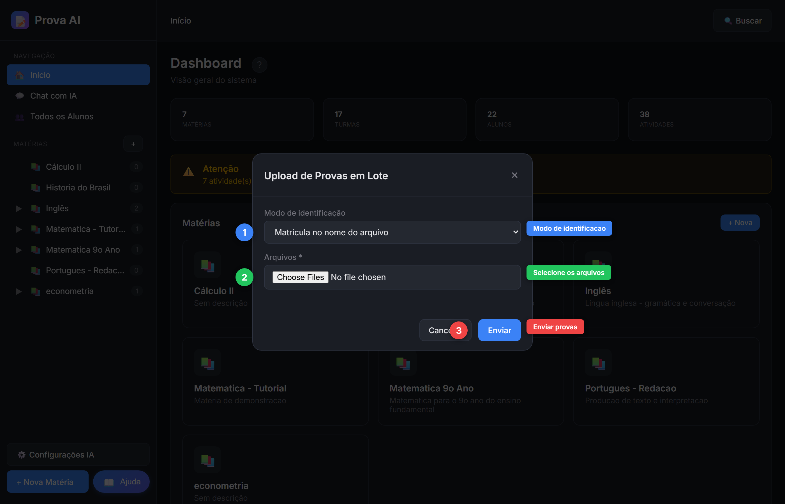
Duas formas de enviar provas respondidas:
Individual: Upload → Tipo "Prova do Aluno" → Selecione o alunoEm Lote: Use "Upload Provas em Lote" para várias de uma vez
💡 Dica para lote: Nomeie os arquivos com o nome do aluno (ex: "joao_silva.pdf") para identificação automática!
⚙️ Passo 7: Execute o Pipeline
Processe as provas com IA
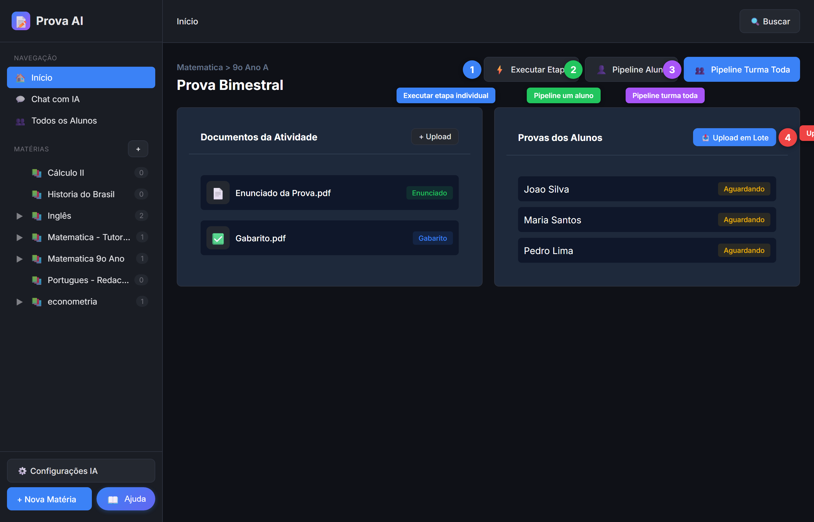
Na página da atividade, você tem 4 botões principais:
⚙️ Executar Etapa: Executa uma etapa específica⚡ Pipeline Aluno: Processa todas as etapas para um aluno🚀 Pipeline Todos os Alunos: Processa toda a turma de uma vez📚 Upload em Lote: Envia várias provas
▶️ Recomendação: Use "Pipeline Todos os Alunos" para processar todos os alunos de uma vez!
🤖 Passo 8: Configure a IA
Escolha modelos por etapa (opcional)
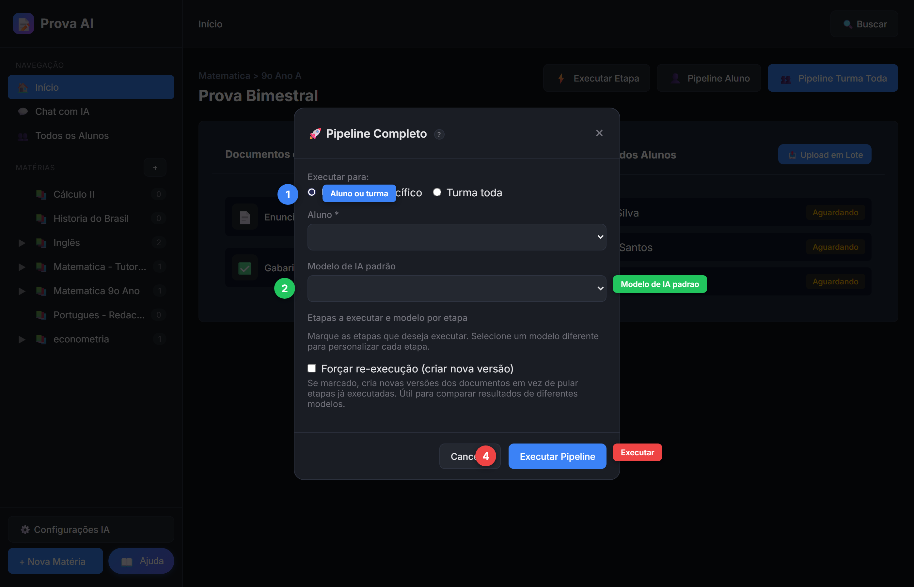
Ao executar o pipeline, você pode configurar:
Modo: Um aluno específico ou turma todaModelo Padrão: IA que fará todas as etapasEtapas: Selecione quais executarModelo por Etapa: (Opcional) Customize cada etapa
💡 Simples: Por padrão, um modelo faz tudo. Só customize se necessário!
👁️ Visualize os Resultados
Confira o trabalho da IA
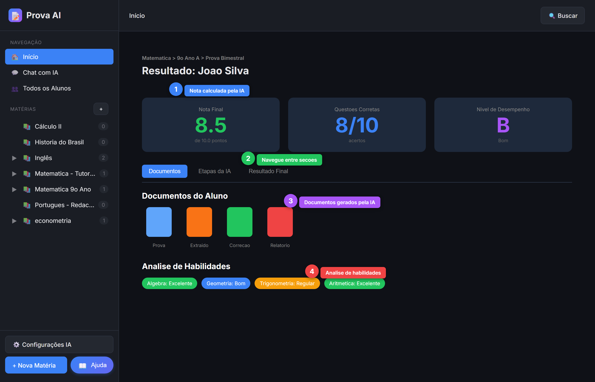
Após o pipeline, a página de resultados mostra:
📌 Documentos do Aluno: Prova respondida, sua correção manual🤖 Etapas da IA: Cada documento gerado pelo pipeline📊 Resultado Final: Nota, habilidades, relatório
Use o ícone 👁️ para visualizar cada documento.
🧑🏫 Sua correção: A aba "Correção do Professor" é para sua avaliação manual!
💬 Use o Chat para Relatórios
Pergunte à IA sobre desempenho
O Chat com IA lê todos os documentos e responde:
📊 Para a turma: "Quais questões a turma mais errou?"👤 Para um aluno: "Como está o desempenho do João?"📈 Evolução: "Compare as provas 1 e 2"
Use os filtros para focar em matéria, turma ou aluno específico.
🎓 O Aluno Também Usa o Chat!
Aprendizado personalizado
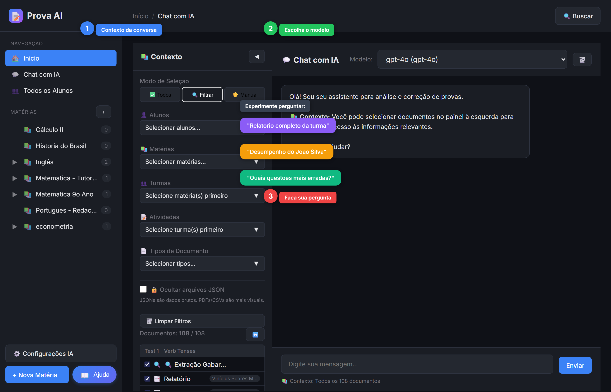
O aluno pode acessar o chat e perguntar:
"Por que eu errei a questão 3?" "Me ensina a resolver isso" "Onde eu preciso melhorar?" "Como estudar para a próxima prova?"
🎯 Objetivo final: O aluno entende onde errou e como melhorar, não só vê a nota!
Snapshot arquivado em 2026-04-11. Código-fonte original: frontend/index_v2.html, objeto tutorialContent, linhas ~6118-6399.
Tag de rollback: v1.3.0-pre-tutorial-rework.
Plano da reforma: plano_geral_novo_tutorial.md .